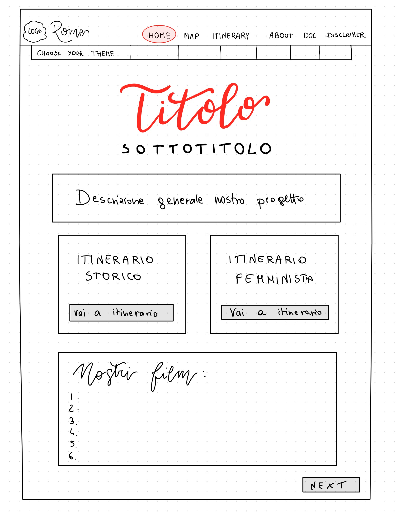
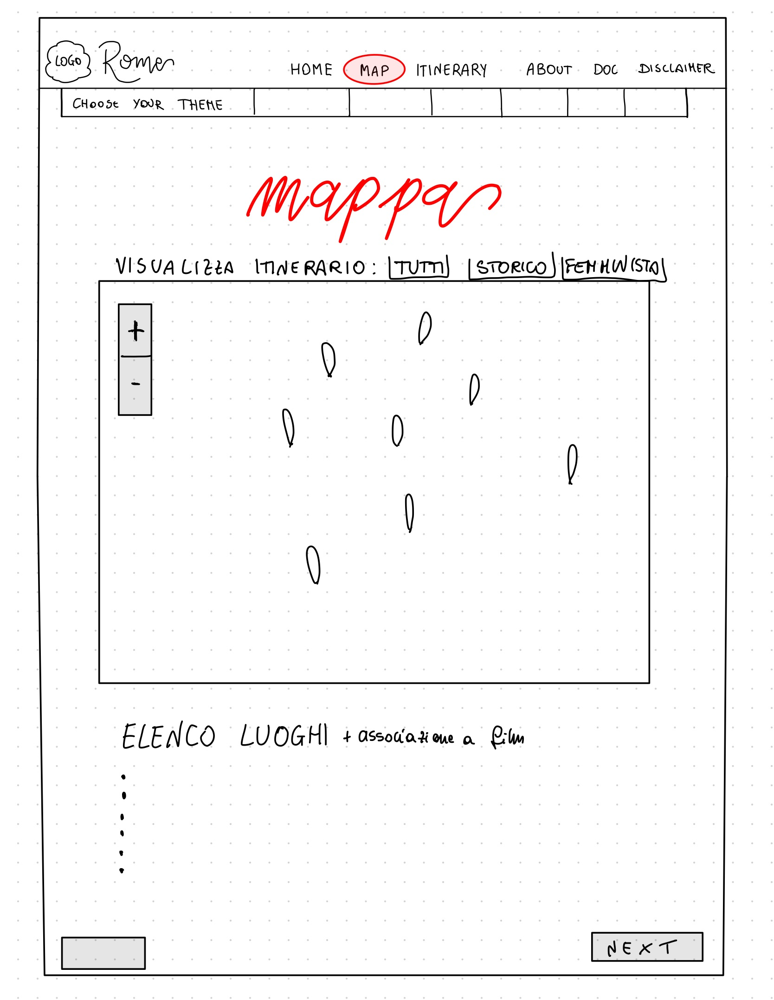
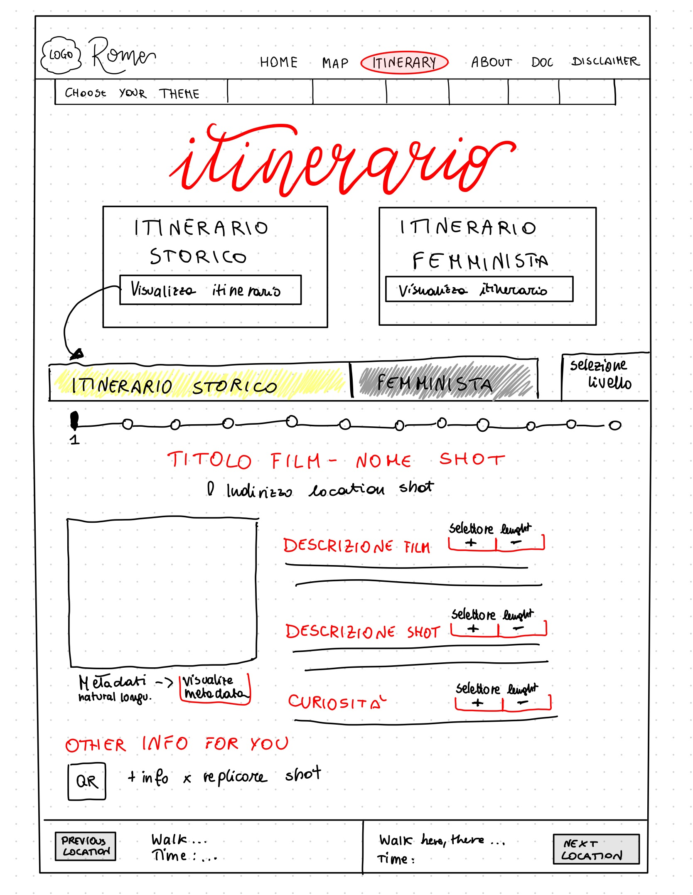
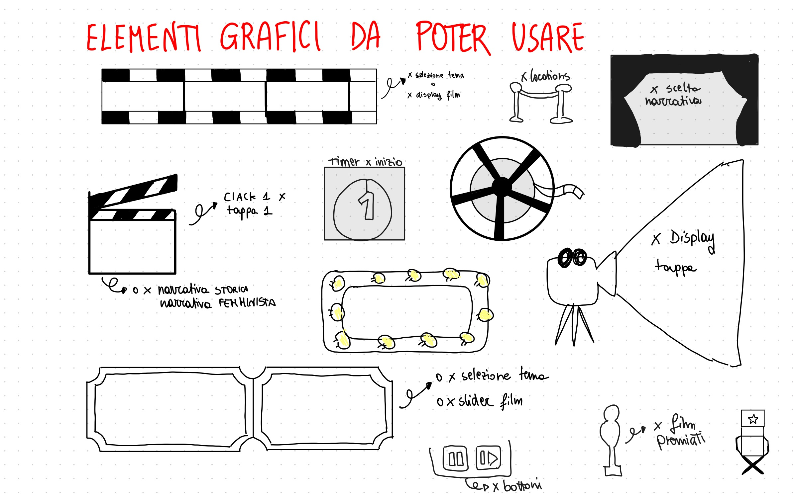

Documentation
This section collects the documentation related to the design and development of Rome in Two Takes. It presents the different stages of the project, from the initial brainstorming to research, prototyping, content design and implementation.
Our Workflow
01. Brainstorming and Topic Selection
The project started from a shared interest in cinema and from a discussion about the films, directors and cinematic traditions that interested us most. Rather than choosing a city immediately, we first explored different possibilities and considered which urban contexts could support a location-based cinematic experience.
Several Italian cities were taken into consideration, including Bologna and Naples. Rome gradually emerged as the most suitable choice because of the central role it has played in the history of Italian cinema. Different generations of filmmakers have repeatedly used the city not simply as a background, but as an active element of their stories, creating a particularly rich relationship between cinema, history and urban space.
At the same time, we were interested in developing a project that could offer more than a conventional tour of famous film locations. During the brainstorming process, the idea of exploring the relationship between women and the city became particularly significant to us. This led us to imagine Rome through two complementary perspectives: its historical transformation through cinema and the progressive occupation of urban space by female characters.
02. Research and Film Selection
Once Rome had been selected, we started a research phase dedicated to Italian films strongly connected with the city. We watched and compared different films, investigated their historical contexts and identified the real locations that could be connected to the project.
The final selection was not intended to provide a complete history of cinema in Rome. Instead, the films were chosen according to their ability to contribute to the narratives we wanted to construct. Particular attention was given to films in which the city plays a meaningful role and in which locations could become part of a wider historical or thematic interpretation.
The selected corpus includes films from different periods of Italian cinema, allowing the project to connect changes in the representation of Rome with changes in Italian society. The research also involved identifying filming locations, comparing cinematic spaces with their present-day appearance and studying their geographical distribution across the city.
03. Narrative Design
The research phase included the analysis of websites and digital projects related to cinema and film locations, as well as research on the selected films, their historical context and the real locations used during filming.
The geographical distribution of the locations was also studied in order to create plausible itineraries through the city.
04. Information Architecture
Before developing the individual contents, we defined a common structure for the website. The aim was to make the different sections feel part of the same system while allowing the map and the two itineraries to perform different functions.
A first basic version of the website was therefore created to establish its main architecture. We defined a common header and footer, the primary navigation system and the main pages: Home, Map, Historical Journey, Women & Urban Space, Documentation, Team and Disclaimer.
At this stage we also established the main interactions that the final website would need to support: moving between pages, exploring the locations through an interactive map, filtering them according to the two narratives and navigating the individual stages of each itinerary.
05. Prototyping and Visual Exploration
Before consolidating the final interface, we used paper prototypes and visual sketches to explore alternative page structures. The prototypes helped us reason about the hierarchy of information, the relationship between images and text and the way users would move between the map, the itineraries and the other sections of the website.
These first versions were intentionally simple. Their purpose was not to define the final visual identity, but to establish where the main components should appear and which interactions each page should support.



Graphic Ideas

Preliminary visual ideas developed for the graphic identity of the project.
06. Content and metadata design
Once the structure of the itineraries had been defined, the textual contents were developed according to a shared model. Each location combines information about the place, its role in the selected film and its significance within the corresponding narrative.
The itinerary pages were also designed to support different levels of exploration. Users can move between shorter and more detailed narrative texts and access additional information through dedicated metadata and external resources.
Metadata describing films, locations and the project were organised using established vocabularies including Schema.org, Dublin Core and CIDOC CRM. This allowed the descriptive content of the website to be accompanied by a more structured representation of its resources.
07. Development
After the structure, narratives and visual organisation had been defined, the website was implemented using HTML, CSS and JavaScript. Development was carried out progressively, starting from the shared components of the website and then implementing the specific behaviour required by each page.
Shared Structure
A common navigation system, header, footer and general stylesheet were developed to maintain consistency across the website.
Interactive Map
The map was developed with Leaflet and OpenStreetMap. Location data are stored in JavaScript and used to automatically generate markers, popups and the two itinerary routes. Users can filter the locations according to the Historical or Women & Urban Space narratives.
Itineraries
The two narrative pages were developed as sequences of cinematic locations. Navigation controls allow users to move through the different stages and access story content, metadata and external information.
Graphic Themes
Alternative styles were designed to reinterpret the same content through different historical and visual languages. The common HTML structure remains consistent while CSS is used to modify typography, colours, layouts and decorative elements.
VISUAL DESIGN
Visual Identity & Historical Styles
One of the project's requirements was the development of multiple visual themes capable of transforming the appearance of the website while preserving its content and structure.
Rather than treating these themes as simple colour variations, we approached each one as an opportunity to explore the visual language of a different historical period.
Since cinema represents the central subject of Rome in Two Takes, cinematic aesthetics became an important reference throughout the design process. Film posters, typography, promotional materials and historical visual conventions helped shape the identity of the different themes.
Each stylesheet therefore combines historical inspiration with contemporary usability, adapting typography, colours, backgrounds, decorative elements and interface components to create a coherent visual experience.
Explore the Styles
Select a historical period to discover the visual references and design choices behind each theme.
1650s Early Printed Culture
This theme explores the visual conventions of seventeenth-century printed culture, drawing inspiration from historical books, typography and editorial design. The interface reinterprets the appearance of early printed materials, exploring the relationship between text, ornamentation and page composition.
Visual references1850s Nineteenth-Century Design
Inspired by nineteenth-century printed culture, this theme explores the visual language of historical publications and graphic communication. Typography, decorative elements and page composition reinterpret the aesthetics of printed materials from the period, adapting their characteristics to a contemporary digital interface.
Visual references1900s The Birth of Cinema
Inspired by the earliest years of cinema, this theme recalls the visual atmosphere of silent films and early film screenings. The restrained palette of greys, dark backgrounds and light typography evokes the appearance of black-and-white cinema, while serif typefaces reinforce its historical character. The overall design draws on the visual conventions of early cinematic productions, when moving images were still closely connected to photography, theatre and printed advertisements.
Visual references1940s The Cinema Theatre
This theme draws inspiration from cinema theatres and promotional materials of the 1940s, aiming to recreate the atmosphere of a historical movie theatre. Expressive display typography recalls cinematic signage, while more restrained serif typefaces support readability in longer texts. Decorative elements and theatrical compositions contribute to an aesthetic inspired by the experience of cinema as both entertainment and cultural space.
Visual references1960s Italian Film Posters
Inspired by Italian illustrated film posters of the 1950s and 1960s, this theme explores the expressive visual language of post-war cinematic advertising. Bold condensed typography, warm paper tones and vibrant colours such as red, turquoise and yellow recall the aesthetics of historical film posters. Large images, prominent titles and graphic compositions reinterpret these references within a contemporary web interface, combining the visual impact of cinematic advertising with the functional requirements of digital navigation.
Visual references1990s Late Twentieth Century
This theme explores the visual culture of the late twentieth century, a period characterised by the coexistence of analogue media and emerging digital technologies. Inspired by the graphic language of the 1990s, the interface reinterprets visual conventions associated with popular media, electronic communication and the early development of digital design.
Visual references2035 Imagining the Future
Unlike the historical themes, this style proposes a speculative interpretation of future digital aesthetics. Rather than drawing inspiration from a defined historical visual tradition, it explores how emerging technologies and evolving interface conventions might influence the presentation of cultural information. The design imagines a possible future visual language, extending the website's historical exploration towards a speculative digital environment.
Visual referencesDESIGN REFERENCES
Our Visual Inspiration Board
The development of the different visual themes was supported by research into historical graphic design, cinematic imagery, typography and film advertising.
We collected our references in a shared Pinterest board, which served as a visual archive throughout the design process. The board brings together the different inspirations that contributed to the development of the website's historical and speculative identities.
Explore the complete inspiration board